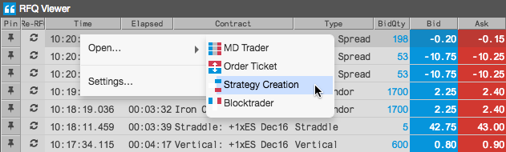

Note: Before opening Strategy Creation, ensure that the SC column is shown in the RFQ Viewer. To show this column, right-click in the RFQ Viewer and select Settings | Set RFQ Viewer columns from the context menu.
To seed Strategy Creation from the RFQ Viewer:
Select a row in the viewer and click the strategy creation button in
the SC column.
The Strategy Creation widget opens seeded with the leg(s) and market data for the instrument in the row.

Optionally, you can also right-click a row in the viewer to open the context menu and click Open |
Strategy Creation.

- Configure the strategy in the Strategy Creation widget as needed and submit it to the exchange.